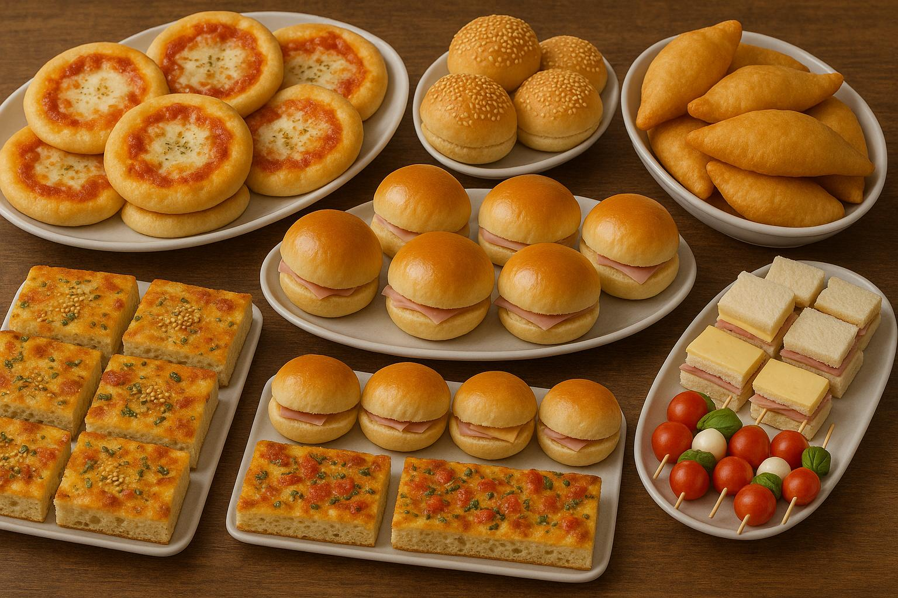

üçû Impasto Buffet

Descrizione
Un impasto versatile e soffice, perfetto per realizzare pizzette, panini, panzerotti e tante idee sfiziose da buffet.
Ingredienti
- 250 ml Acqua
- 50 ml Olio extravergine d’oliva
- 500 ml Farina 0
- 1 bustina di lievito secco (oppure ½ bustina per una lievitazione più lunga)
- 20 g circa di zucchero
- 1 cucchiaino di sale fino (da aggiungere dopo 1 minuto di impasto)
Procedimento
- Inserire nel boccale, in quest’ordine: acqua, olio, farina, lievito secco e zucchero.
- Avviare il programma "Impasto duro"(per il bimby altrimenti mescolare a mano).
- Dopo un minuto, aggiungere il cucchiaino di sale fino.
- Lasciare lievitare nel boccale per circa 1 ora oppure trasferire l’impasto in una ciotola coperta e metterla in un ambiente caldo (ad esempio un microonde preriscaldato per 2 minuti).
- Cuocere a 180°C per 20/25 minuti
Idee di utilizzo dell’impasto
- Pizzette: stendere a mezzo cm, coppare con un bicchiere e condire con:
- Salsa rossa e olive
- Patata schiacciata
- Zucchine tritate
- Cipolla
- Altri ingredienti a fantasia
- Rotolini con würstel: tagliare strisce e arrotolarle attorno ai pezzi di würstel.
- Panzerotti: coppare, farcire, chiudere a mezzaluna e sigillare i bordi con una forchetta.
- Paninetti: staccare pezzi da circa 40 g, formare palline e posizionarle con la chiusura verso il basso.
- Mezzelune da farcire: creare un disco grande, chiuderlo a metà con carta forno in mezzo. Dopo la cottura, farcire con salumi e formaggi.
⬅ Torna alla Home